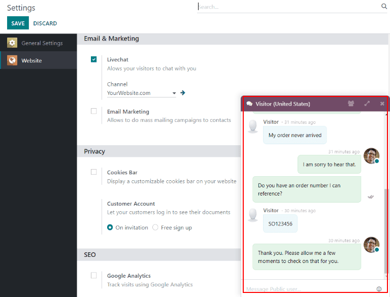
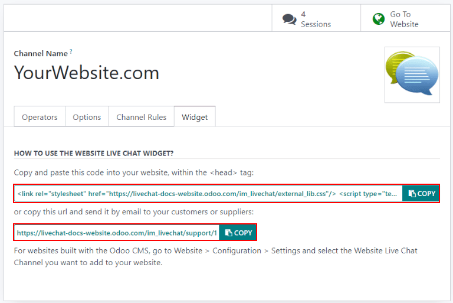

Live Chat¶
Odoo Live Chat allows users to communicate with website visitors in real time. With Live Chat, leads can be qualified for their sales potential, support questions can be answered quickly, and issues can be directed to the appropriate team for further investigation (or follow up). Live Chat also provides the opportunity for instant feedback from customers.
Enable Live Chat¶
In order to enable Live Chat, the Live Chat application needs to be installed. This can be done in one of two ways.
Go to and click Install.
In the application, go to , scroll to the Email & Marketing section, check the box next to Livechat, and click Save.

After the Live Chat application is installed, a live chat Channel will be created by default and automatically selected in the drop-down.
Create a new live chat channel¶
To create a new live chat Channel, go to . This will open a blank channel detail form. Enter the name of the new channel in the Channel Name field.

To configure the remaining tabs on the channel detail form (Operators, Options, Channel Rules, and Widgets), follow the steps below.
Operators¶
Operators are the users who will respond to live chat requests from customers. When a user is added as an operator in a live chat channel, they will be able to receive chats from website visitors wherever they are in the database. Chat windows will open in the bottom right corner of the screen.
The user who originally created the live chat channel will be added as an operator by default.
To add additional users, navigate back to the Website Live Chat Channels dashboard via the breadcrumbs and click on the appropriate Live Chat Channel. Then, on the channel detail form, under the Operators tab, click ADD to reveal an Add: Operators pop-up window.
In the pop-up window, search for the desired user(s). Then, click the checkbox next to the user(s) to be added, and click SELECT.
New operators can be created and added to the list directly from this pop-up, as well, by clicking New, and filling out the Create Operators pop-up form. When the form is complete, click SAVE & CLOSE (or SAVE & NEW for multiple record creations).
Note
Current operators can be edited (or removed) by clicking on their respective boxes in the Operators tab, which reveals a separate Open: Operators pop-up. In that pop-up, adjust any information as needed, and click Save, or click Remove to remove that operator from the channel.
Options¶
The Options tab on the live chat channel details form contains the visual and text settings for the live chat window.
Livechat button¶
The Livechat Button is the icon that appears in the bottom corner of the website.

Change the text in the Text of the Button field to update the greeting displayed in the text bubble when the live chat button appears on the website.
Change the Livechat Button Color by clicking a color bubble to open the color selection window. Click the 🔄 (refresh) icon to the right of the color bubbles to reset the colors to the default selection.
Tip
Color selection, for the button or header, can be made manually using a slider or through RGB, HSL, or HEX color code entries from the pop-up color selection window that appears when either of the color bubbles are clicked. Different options will be available, depending on your operating system.
Livechat window¶
The Livechat Window is the space where the live chat conversation with website visitors takes place.
Edit the Welcome Message to change the message a visitor sees when they open a new chat session. This message will appear as though it is sent by a live chat operator, and acts as both a greeting and an invitation to continue the conversation.
Edit the Chat Input Placeholder to alter the text that appears in the box where visitors will type their replies.
The Channel Header is the colored bar at the top of the chat window. The Channel Header Color can be changed following the same steps as the Livechat Button Color above.

The Livechat Window with a purple header. The chat input placeholder reads “Ask Something…”¶
Channel rules¶
The Channel Rules tab on the live chat channel details form determines when the Live Chat Window opens on the website, by configuring when a URL Regex action is triggered (e.g., a page visit).
To create a new channel rule, click Add a line. This opens the Open: Rules pop-up.

Create new rules¶
Fill out the fields on the Open: Rules pop-up as instructed below, then click Save.
The Livechat Button is the icon that appears in the bottom corner of the website. Select from one of the following display options:
Show displays the chat button on the page(s).
Show with notification displays the chat button, as well as a floating text bubble next to the button.
Open automatically displays the button and automatically opens the chat window after a specified amount of time (designated in the Open automatically timer field).
Hide hides the chat button on the page(s).
If a Chatbot will be included on this channel, select it from the dropdown. If the chatbot will only be active when no operators are active, check the box labeled Enabled only if no operator.
In the URL Regex field, input the relative URL of the page where the chat button should appear.
This field designates the amount of time (in seconds) a page will be open before the chat window will open. If the Livechat Button for this rule is not set to Open automatically, this field will be ignored.
If this channel should only be available to site visitors in specific countries, add them to the Country field. If this field is left blank, the channel will be available to all site visitors, regardless of location.
Note
In order to track the geographical location of visitors, GeoIP must be installed on the database. While this feature is installed by default on Odoo Online, On-Premise databases will require additional setup steps.
Widget¶
The Widget tab on the live chat channel details form provides the shortcode for an embeddable website widget. This code can be added to a website to provide access to a live chat window.
The live chat widget can be added to websites created through Odoo by navigating to the . Then scroll to the Livechat section, and select the channel to add to the site. Click Save to apply.
To add the widget to a website created on a third-party platform, click the first COPY
button on the Widget tab and paste the code into the <head> tag on the site.
Likewise, to send a live chat session to a customer, click the second COPY button on the Widget tab. This link can be sent directly to a customer, and once they click the link, it will open a new chat.
Participate in a conversation¶
As explained above, operators are the users who will respond to live chat requests from customers. The information below outlines the necessary steps for operators participating in live chat conversations on an Odoo database.
Set an online chat name¶
Before participating in a live chat, operators should update their Online Chat Name. This is the name that will be displayed to site visitors in the live chat conversation.
To update the Online Chat Name, click on the user name in the upper-right corner of any page in the database. Select My Profile to open the Profile page. On the right side of the Preferences tab, locate the Online Chat Name field and enter the preferred name.
If a users Online Chat Name is not set, the name displayed will default to the User Name.
Example
A user has their full name as their User Name, but they do not want to include their last name in a live chat conversation. They would then set their Online Chat Name to include only their first name.

Join or leave a channel¶
To join a live chat channel, go to the app and click the JOIN button on the kanban card for the appropriate channel.
Any channel where the user is currently active will show a LEAVE button. Click this button to disconnect from the channel.

Important
Operators that do not show any activity in Odoo for more than thirty minutes will be considered disconnected, and subsequently removed from the channel.
Manage live chat requests¶
When an operator is active in a channel, chat windows will open in the bottom right corner of the screen, no matter where they are in the database. They can participate in conversations without leaving their current location.
Tip
Conversations can also be accessed by clicking the Conversations icon in the menu bar.

Live chat conversations can also be viewed by navigating to . New conversations will appear in bold under the LIVECHAT heading along the left panel.

Click on a conversation in the left panel to select it. This will open the conversation. From this view, an operator can participate in the chat the same as they would in the normal chat window.